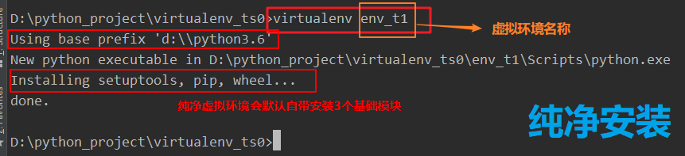
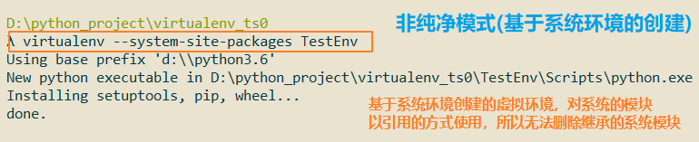

virtual：虚拟，env:environment环境的简写，所以virtualenv就是虚拟环境，顾名思义，就是虚拟出来的一个新环境，比如我们使用的虚拟机、docker，它们都是把一部分的内容独立出来，这部分独立的内容相当于一个容器，在这个容器只呢个，我们可以“为所欲为”----安装需要的依赖包，软件..，同时这个容器是与外界相互独立的，容器与容器直接也是互相独立不影响。
【前提概要】
Django也是一个非常流行的web框架。由于Django的迭代更新非常快，也比较频繁，所以有一些过时的东西需要丢弃掉，一些新的东西需要加进来，从而导致不同的版本之间不兼容。比如Django1.3、Django1.4、Django1.8之间就有很大的差异性。
或者是说，以Python的版本举例，现在工作中使用的Python版本与Python2.x和Python3.x两种。
【故事背景】
假设要进行Python web开发，使用的是Django。手上还有两个老项目A和B需要维护，而新项目C也正在开发中。这里项目A使用的是django1.3，项目B使用的是django1.4，而新项目C使用的是Django1.8。那么问题来了，如何同时在本地进行ABC这三个项目的开发和维护？
正常的模式可能是这样：现在在A项目上有一个BUG需要修复，于是，先执行下面的命令，删除掉原来的版本：
pip3 uninstall django
然后再执行下面的命令安装django1.3pip3 install django==1.3数分钟后，bug修复完毕，好，现在进行新项目C的开发了，然后又要重复上面的故事。
好了，这还是最理想的情况。最不理想的情况就是基于django的第三方依赖也是跟Django版本相关的，于是除了install和uninstall Django之外，还要uninstall和install其依赖，Orz，这特么的就尴尬了...
VirtualEnv能做什么呢？
virtualenv可以搭建虚拟且独立的Python运行环境，使得单个项目的运行环境与其它项目独立起来。同时也可以用于在一台机器上创建多个独立的Python运行环境，VirtualEnvWrapper为前者提供了一些便利的命令行上的封装。
virtualenv是一个非常不错的Python虚拟环境的创建工具，它最大的好处在于：可以让每个Python项目单独使用一个环境，而不会影响系统环境，也不会影响其它项目的环境。
virtualenv可以用于创建独立的Python环境，在这些环境里面可以选择不同的Python版本或者不同的Packages，并且可以在没有root权限的情况下在环境里面重新安装新套件，互相不会产生任何影响，我们可以简单的认为虚拟环境就是一个沙箱系统，我们可以在里面“为所欲为 ”情况下还不会影响外面。
virtualenv本质上是个python包, 使用pip安装:
pip3 install virtualenv在工作目录下创建虚拟环境(默认在当前目录)：注意需要自定义虚拟环境的名字！
创建虚拟环境：
cmd命令创建(创建目录为cmd命令当前目录，所以最好切换到所需要的目录下在进行创建)
(1) virtualenv env_t1 (创建纯净环境)
(2) virtualenv --system-site-packages env_t2 (创建环境，继承原安装的模块)创建虚拟环境有2中模式，一个是纯净模式，一个是基于系统环境的创建(自带了系统装的所有模块)
-# 基于系统环境的创建模式，里面的模块其实是对系统的模块的一个引用，在虚拟环境中是卸载不掉的，因为它只是一种引用关系，除非系统卸载的模块，它才会没了。
-# 纯净模式，里面的不包含系统的模块，需要自己下载安装，从头开始，所以这是在虚拟环境下安装的，你可以在后期卸载。
一般来说，推荐使用纯净模式创建虚拟环境，这样根据自己的需求去安装第三方模块，同时如果想卸载的话也可以在虚拟环境中选择性的卸载。这样自由度更大，而不像另外一种模式，系统里有啥它都引用过来，而且还在虚拟环境中删除不了，影响加载速度等。


使用pip3 list 来查看当前环境下安装的模块列表
激活该虚拟环境：
-windows进到目录里，的Script文件夹输入：activate
-linux：soruse env1/Script/activate
退出虚拟环境：
-deactivate
在pycharm中使用虚拟环境：
-files--settings--Project--Project Interpreter--add选择虚拟环境路径下的python.exe即可
当运行别人项目的时候，首先需要安装项目的依赖，不然就无法运行，Python的pipreqs模块就给我们提供了自动生成项目依赖内容的功能
安装：
pip3 install pipreqs使用：
# 然后在项目所在的目录下使用命令生成包含依赖内容的文件
pipreqs ./如果出现编码格式错误：
UnicodeDecodeError: 'gbk' codec can't decode byte 0x80 in position 776: illegal multibyte sequence解决方法在命令后面指定编码格式：
pipreqs ./ --encoding=utf8如果已经生成过一次依赖包文件requirements.txt，但是又项目新增了一下模块，此时再在后面添加--force覆盖参数重写即可
pipreqs ./ --encoding='utf8' --force拿到依赖包文件我们可以快速自动下载依赖一键安装：
pip3 install -r requirements.txt tips:导出所有已安装的第三方模块：
pip3 freeze > package.txt